WM+ screen proposals
18 images · fictional data · no printer connection. Detailed profile library/import concepts are future remote interfaces, not on-printer menu entries.
Interactive screens · Current screen comparison

Home · ACE mini-view
Open interactive view
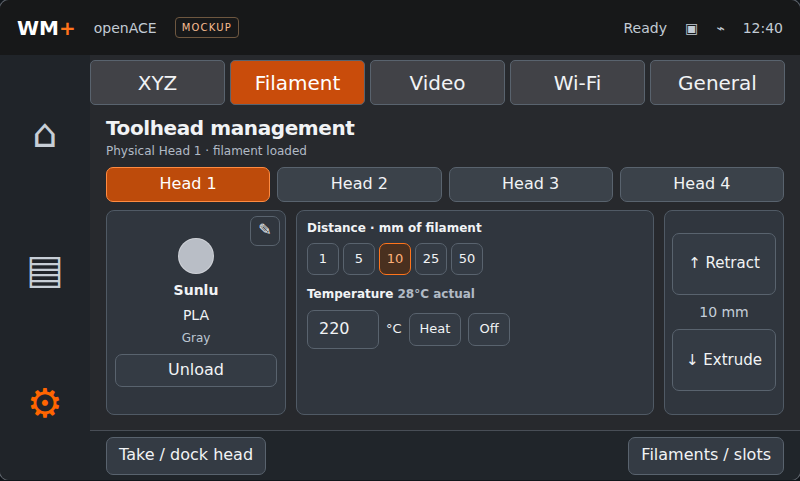
Toolhead manager · four tabs and arrows
Open interactive view
ACE filaments · head 1 selected
Open interactive view
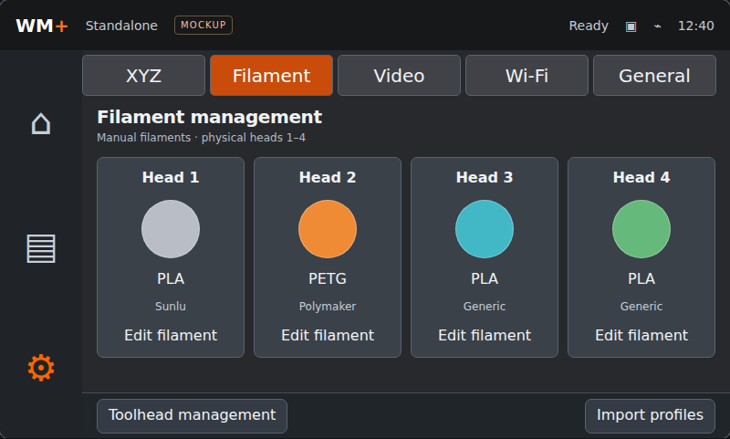
Manual filaments · heads 1 to 4
Open interactive view
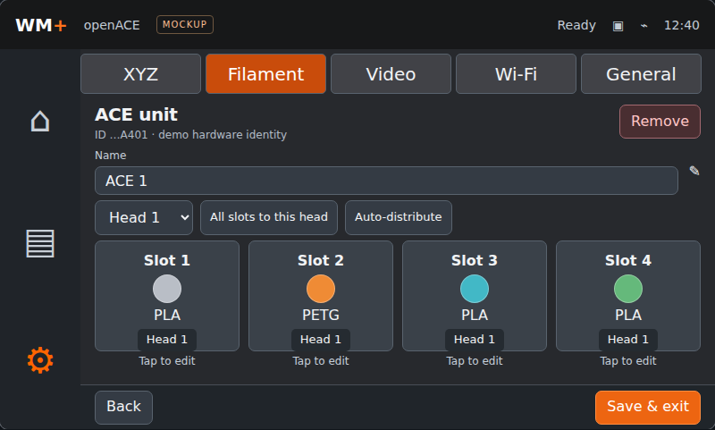
ACE unit · ID, name, slots and assignments
Open interactive view
Simple filament editor
Open interactive view
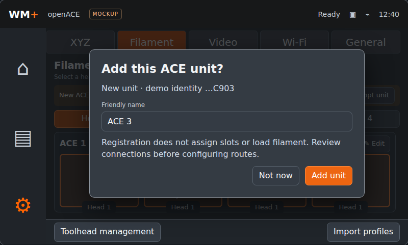
New ACE discovery
Open interactive view
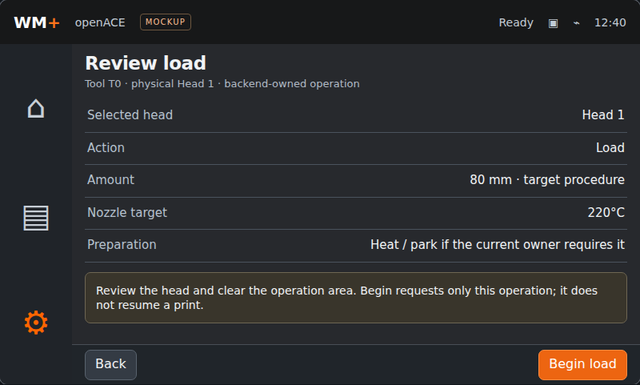
Explicit operation review
Open interactive view
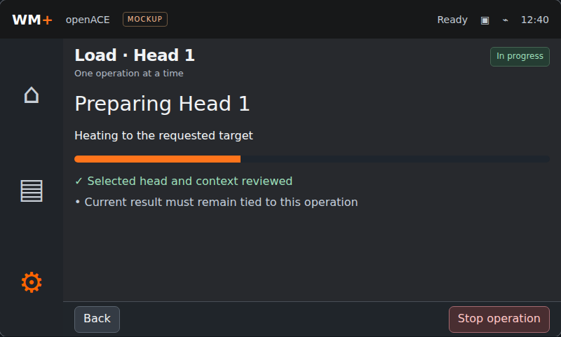
Operation progress
Open interactive view
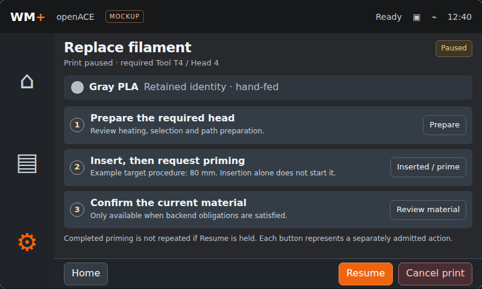
Paused recovery
Open interactive view
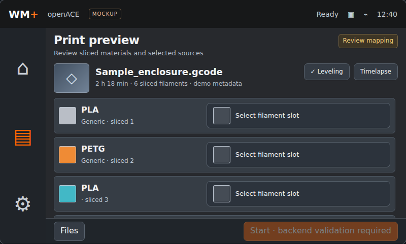
Print preview
Open interactive view
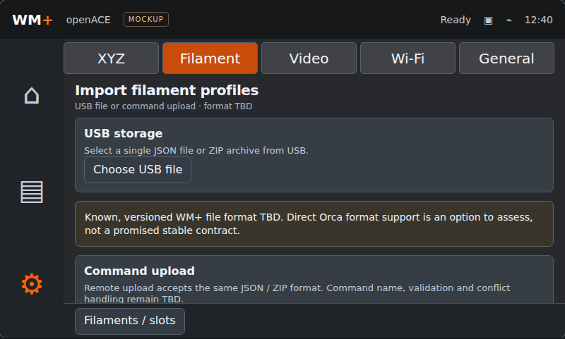
Future remote profile import concept
Open interactive view
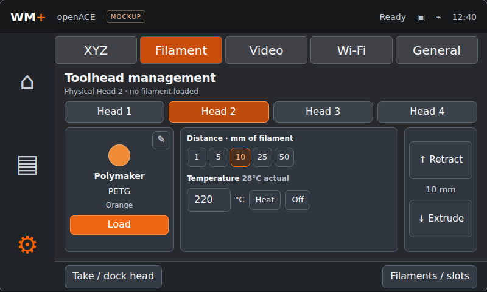
Empty head · Load and edit filament
Open interactive view
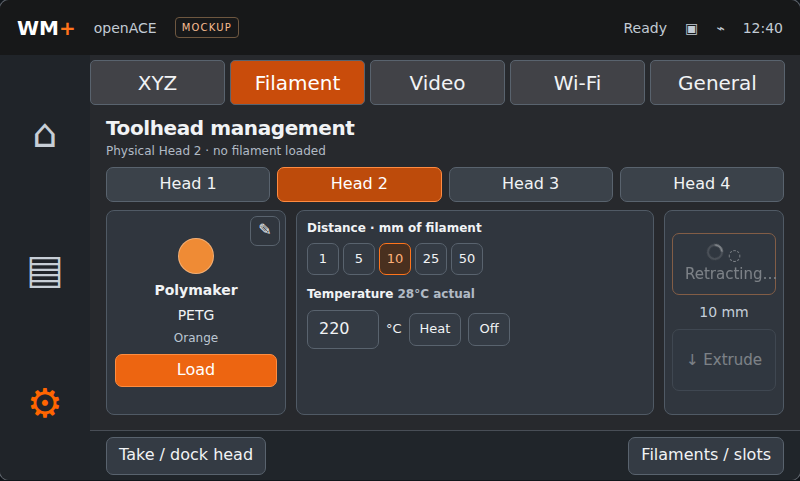
Retract · direct action with button busy feedback
Open interactive view
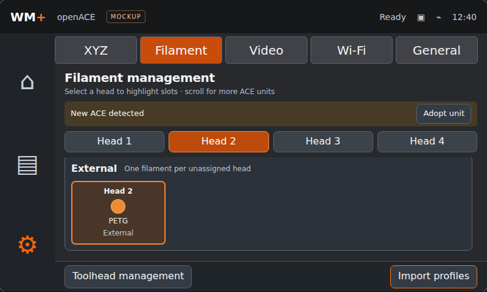
ACE list · External source for unmapped head
Open interactive view
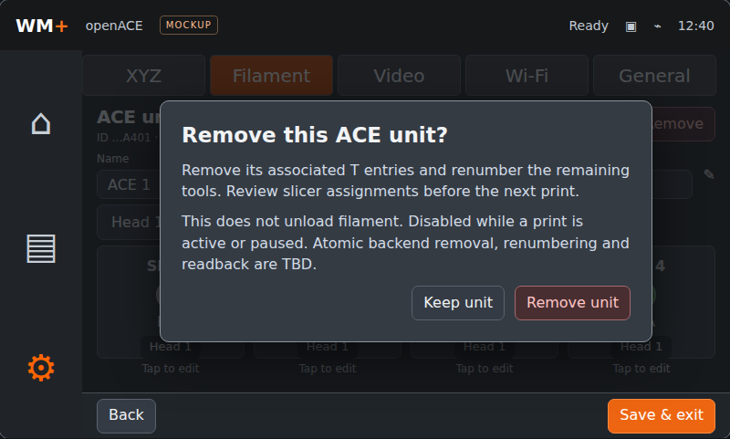
Remove ACE · explicit renumbering confirmation
Open interactive view
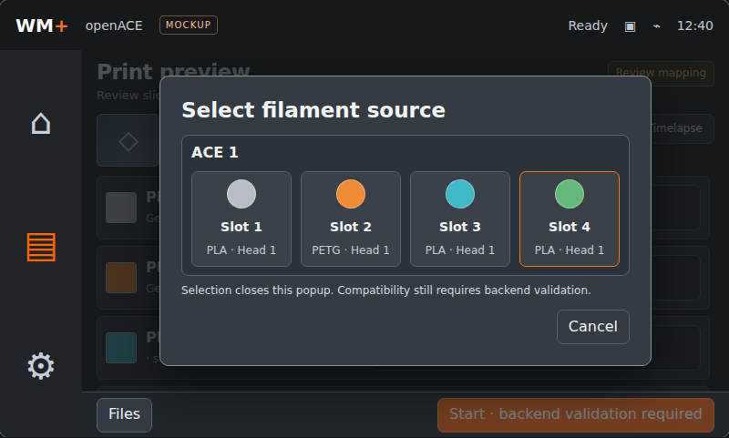
Print preview · source picker
Open interactive view
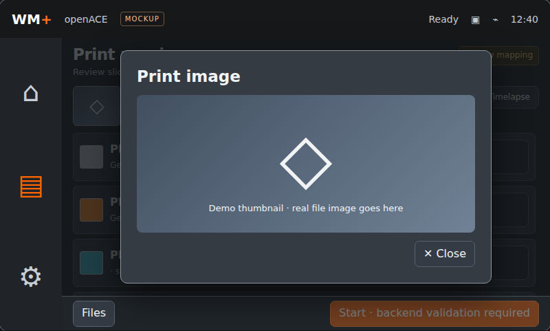